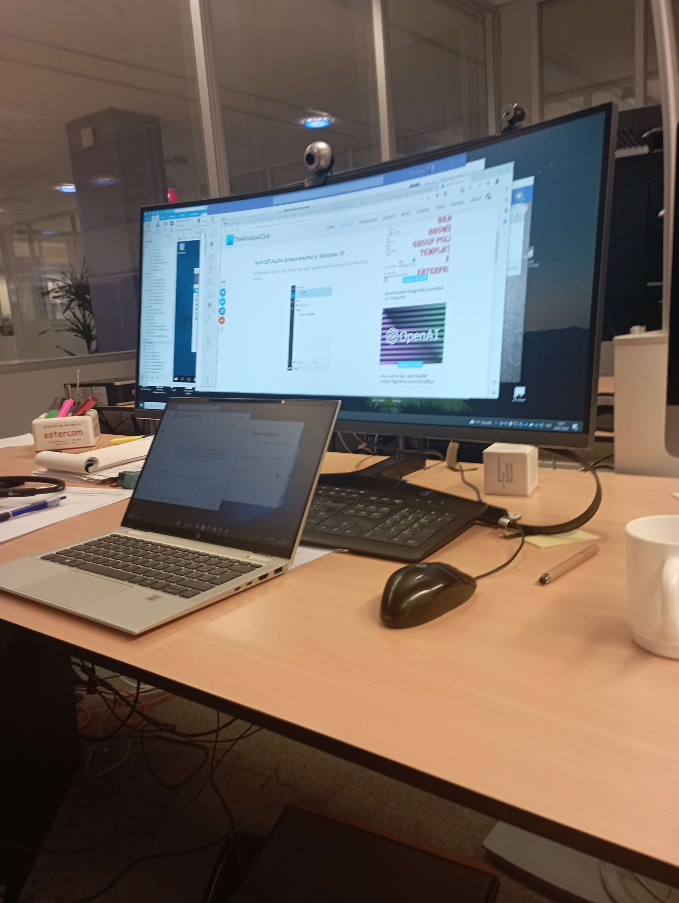

Vrijdag 20/01/2023
9:00-10:00
Ik startte de dag zoals elke dag, mensen helpen met IT-problemen via mail (met Paul). Mensen hadden weer verschillende problemen.
10:00-12:00
Achteraf, ben ik weer bij Arthur gaan zitten. Hij heeft me weer wat tips gegeven zodat ik een beetje kon werken aan mijn site.Daarna, heeft hij mij een mini database oefening gegeven (Een vrij makkelijke oefening eigenlijk). Hij heeft me daarna naar een meeting-room genomen voor beter te kunnen uitleggen. Hier heeft hij me verder dingen uitgelegd over SQL en hoe je het kan linken met microsoft power apps. Hier heeft hij mij bijvoorbeeld de Insert functie uitgelegd en relaties. voorbeelden van relaties zijn een 1 op 1 relatie, 1 op meer en meer op meer relatie. Hier heb ik ook nog een kleine oefening gemaakt.
MIDDAGPAUZE
12:40-16:30
Ik heb vanaf na de middagpauze terug met Paul verschillende mensen terug geholpen tot als de dag verlopen was (problemen zoals audio problemen met iemand zijn pc,...). Dan heeft hij nog dingen verteld over het bedrijf in Frankrijk en over routers. Dat was dan mijn stageweek. Bedankt aan Paul, Arthur, Gunther en Erik, fantastische collega's en geweldige mensen. 